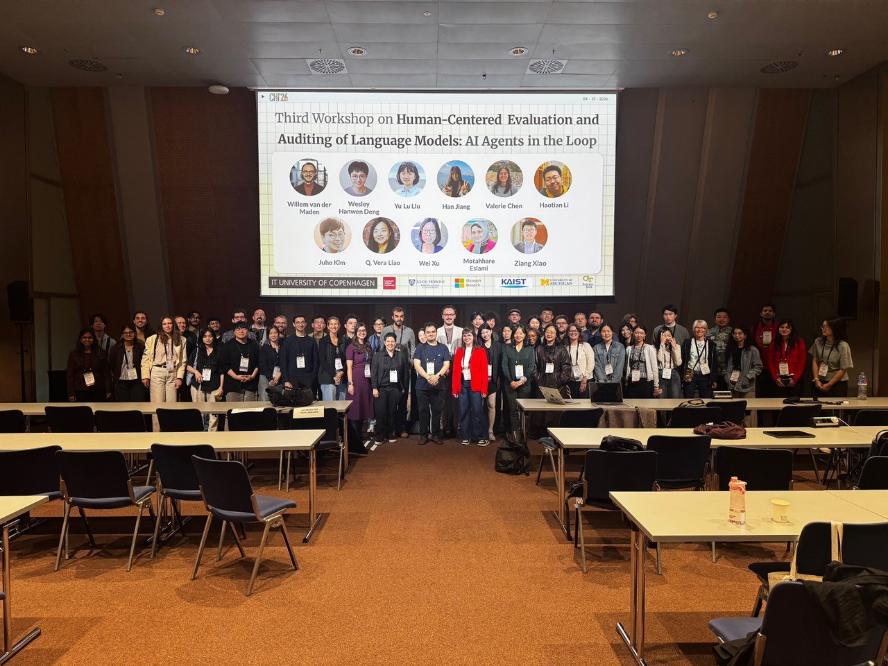
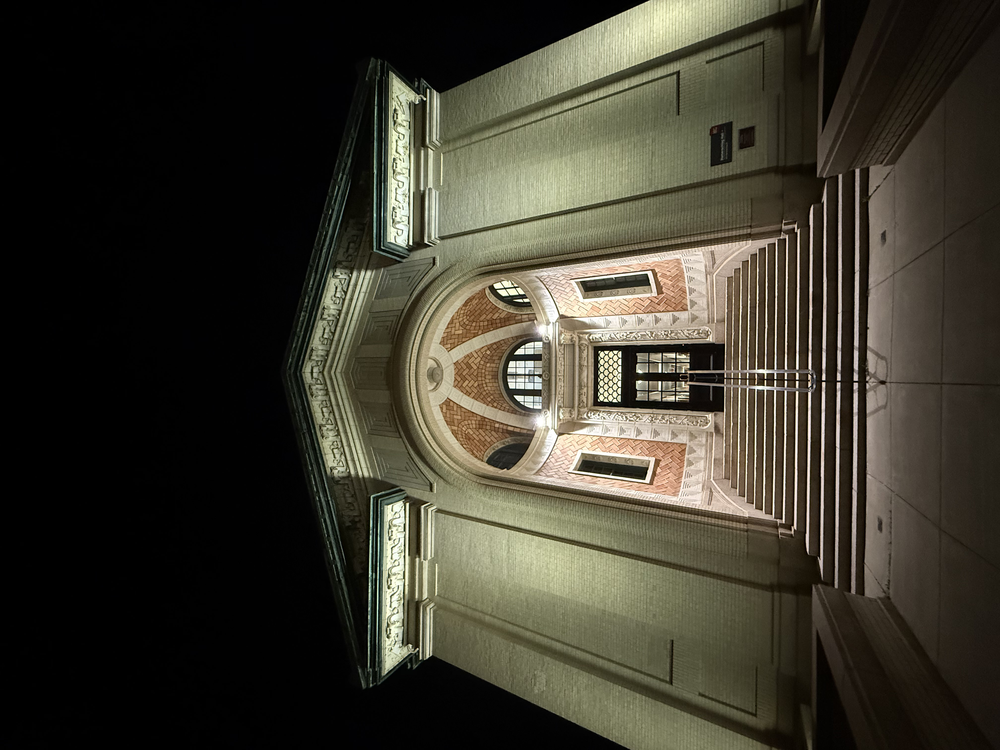
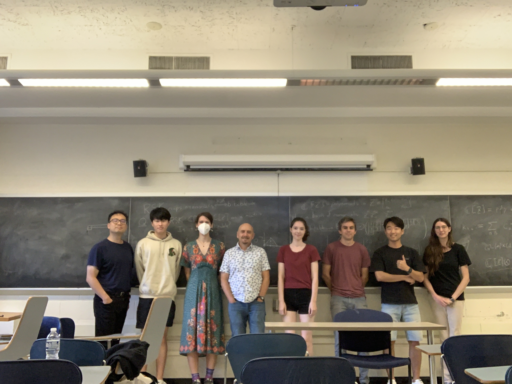
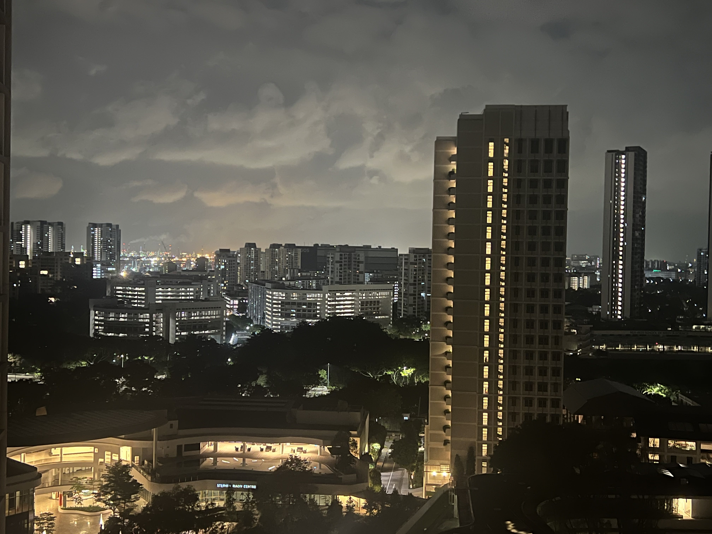
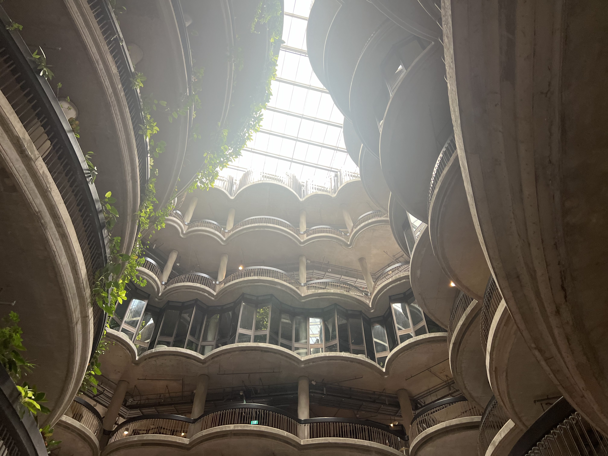
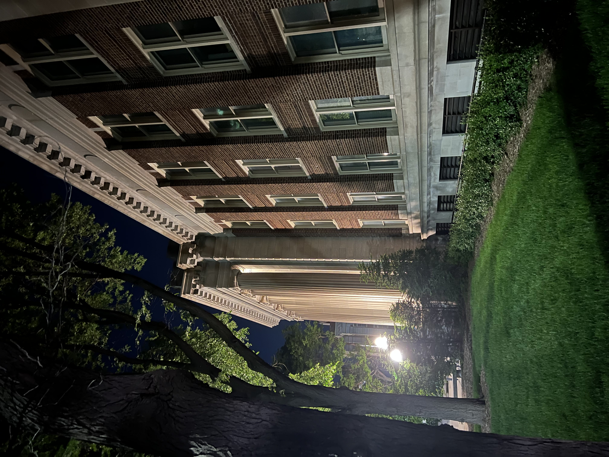
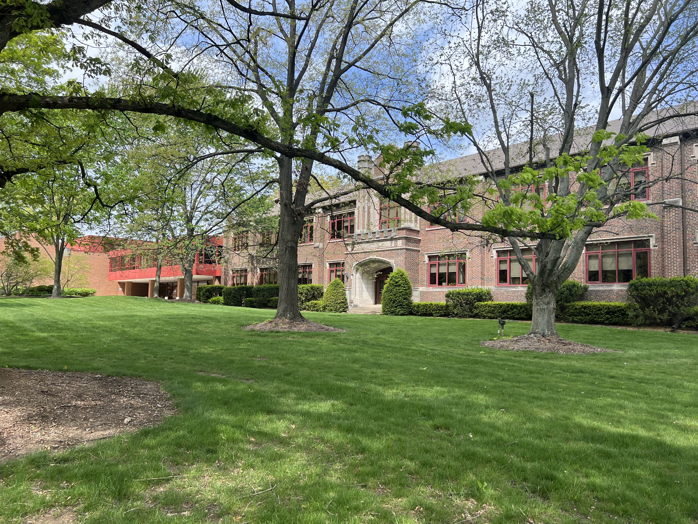
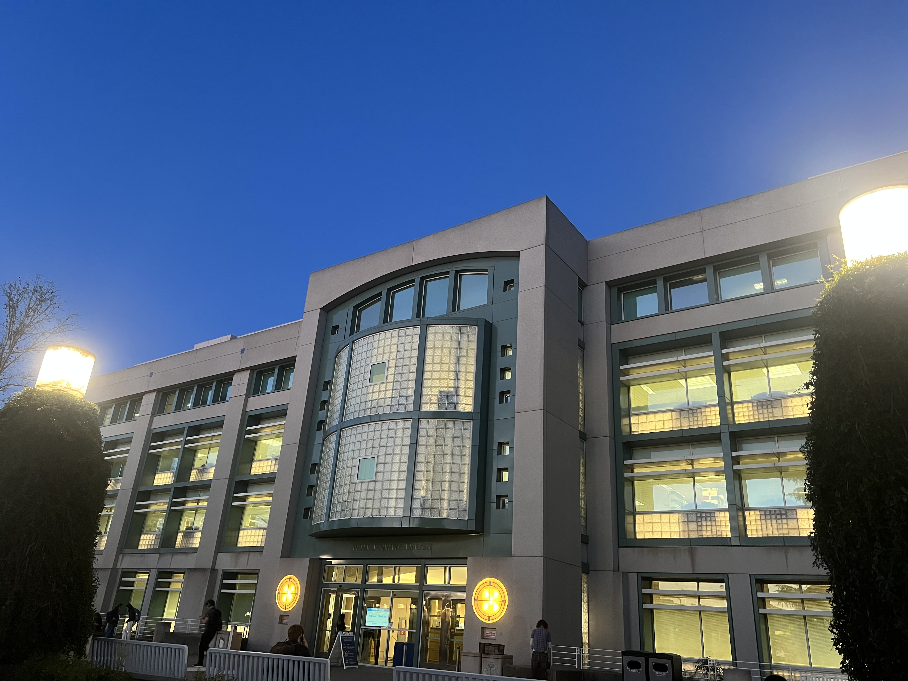
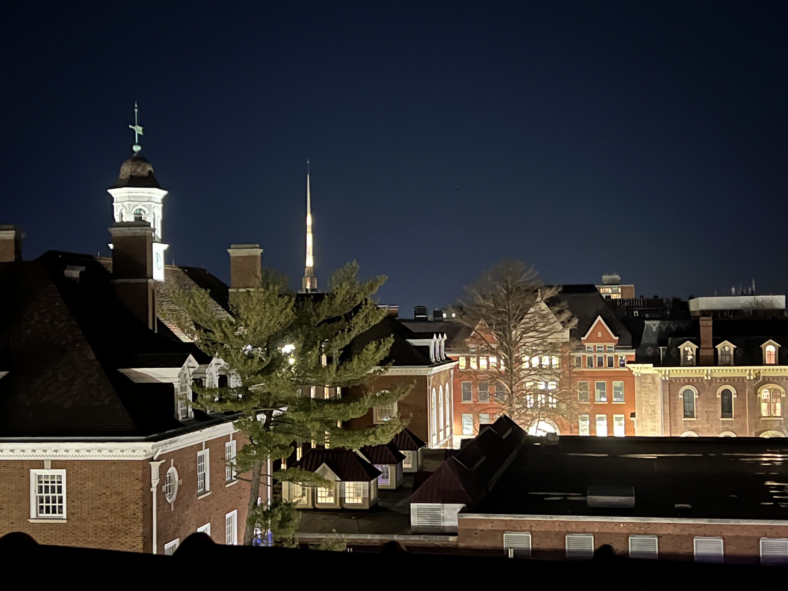
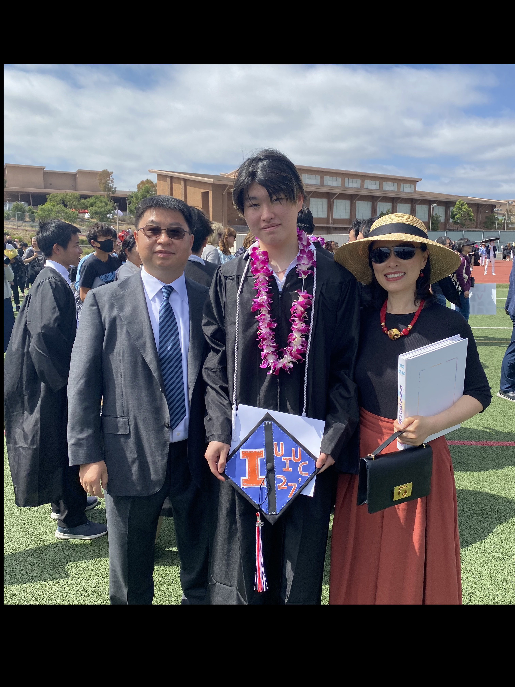

CHI HEAL 2026International Barcelona Convention Center · 15 April 2026

CMU HCII REUHamerschlag Hall · 18 June 2025

Combinatorics ColloquiumUIUC · 20 September 2024

SERIUSNational University of Singapore · 18 June 2024

VisitNanyang Technological University · 6 June 2024

SPiNCOMUniversity of Minnesota · 17 May 2024

Rose-Hulman Undergraduate Math ConferenceRose-Hulman Institute of Technology · 27 April 2024

Special VisitUniversity of California Davis · 7 March 2024

UndergraduateUniversity of Illinois Urbana-Champaign · 28 February 2024

High School GraduationCanyon Crest Academy · 2 June 2023